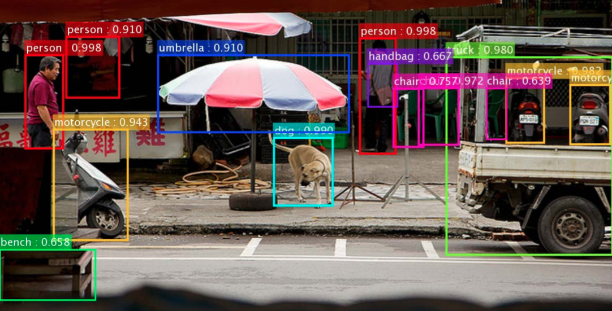
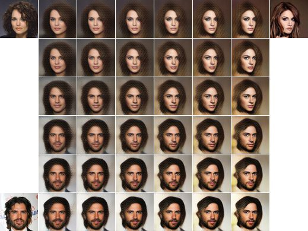
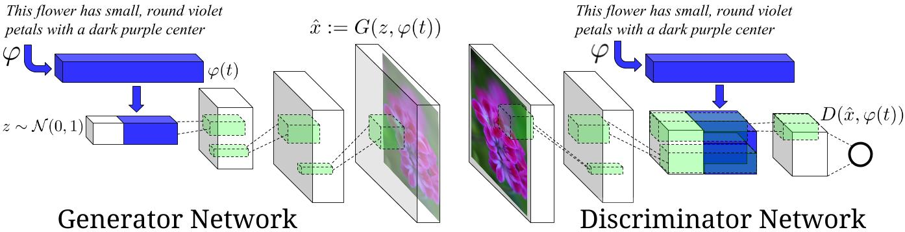

Neurocomputing
Introduction
Artificial Intelligence, Machine Learning, Deep Learning, Neurocomputing

Neurocomputing is at the intersection between computational neuroscience and artificial neural networks (deep learning).
Computational neuroscience studies the functioning of the brain through detailed models.
Neurocomputing aims at bringing the mechanisms underlying human cognition into artificial intelligence.
AI hypes and AI winters

Classification of ML techniques
Supervised learning: The program is trained on a pre-defined set of training examples and used to make correct predictions when given new data.
Unsupervised learning: The program is given a bunch of data and must find patterns and relationships therein.
Reinforcement learning: The program explores its environment by producing actions and receiving rewards.
But also:
- Self-supervised learning, self-taught learning, developmental learning…

Supervised learning : regression

Supervised learning : classification

Supervised learning : classification

The artificial neuron
- A single artificial neuron is able to solve linear classification/regression problems:

y = f( \sum_{i=1}^d w_i \, x_i + b)
- A neuron integrates inputs x_i by multiplying them with weights w_i, adds a bias b and transforms the result into an output y using a transfer function (or activation function) f.
Deep Learning approach to pattern recognition
- End-to-end learning: the NN is trained directly on the raw data (pixels, sounds, text) and solves a non-linear classification/regression problem.

Convolutional neural networks
A convolutional neural network (CNN) is a cascade of convolution and pooling operations, extracting layer by layer increasingly complex features.
It can be trained on huge datasets of annotated examples.

Handwriting recognition
The MNIST database is the simplest benchmark for object recognition (> 99.5 %).
One of the early functional CNN was LeNet5, able to classify digits.


ImageNet recognition challenge
- The ImageNet challenge was a benchmark for computer vision algorithms, providing millions of annotated images for object recognition, detection and segmentation.
Object recognition

Object detection

Object segmentation

Object detection

Dave2 : NVIDIA’s self-driving car

NVIDIA trained a CNN to reproduce wheel steerings from experienced drivers using only a front camera.
After training, the CNN took control of the car.

Facial recognition


Facebook used 4.4 million annotated faces from 4030 users to train DeepFace.
Accuracy of 97.35% for recognizing faces, on par with humans.
Used now to recognize new faces from single examples (transfer learning, one-shot learning).
Recurrent neural networks


A recurrent neural network (RNN) uses it previous output as an additional input (context).
The inputs are integrated over time to deliver a response at the correct moment.
This allows to deal with time series (texts, videos) without increasing the input dimensions.
The input to the RNN can even be the output of a pre-trained CNN.
The most efficient RNN is called LSTM (Long short-term memory networks) (Hochreiter and Schmidhuber, 1997).
Natural Language Processing : Automatic word/sentence completion


Transformers
GPT - Generative Pre-trained Transformer
- GPT can be fine-tuned (transfer learning) to perform machine translation.
GPT - Generative Pre-trained Transformer
- GPT can be fine-tuned to summarize Wikipedia articles.

Github copilot
Github and OpenAI trained a GPT-3-like architecture on the available open source code.
Copilot is able to “autocomplete” the code based on a simple comment/docstring.

Voice recognition

CNNs are not limited to images, voice signals can also be recognized using their mel-spectrum.
Siri, Alexa, Google now, etc. use recurrent CNNs to recognize vocal commands and respond.
DeepSpeech from Baidu is one of the state-of-the-art approach.
Dimensionality reduction: finding the right latent space
Images have a lot of dimensions (pixels), most of which are redundant.
Dimensionality reduction techniques allow to reduce this number of dimensions by projecting the data into a latent space.
Autoencoders are NN that learn to reproduce their inputs by compressing information through a bottleneck.

Feature extraction: self-taught learning
- Pretrain a neural network on huge unlabeled datasets (e.g. Youtube videos) before applying it to small-data supervised problems.

Generative models
- If the latent space is well organized, you can even sample from it to generate new images using variational autoencoders (VAE).


DeepFake
- During training, each autoencoder learns to reproduce the face of one person.

- When generating the deepfake, the decoder of person B is used on the encoder of person A.

DCGAN : Deep convolutional GAN


cGAN : conditional GAN for image synthesis


pix2pix : Image translation

CycleGAN : Neural Style Transfer

CycleGAN : Object Transfiguration

Reinforcement learning


Supervised learning allows to learn complex input/output mappings, given there is enough data.
Sometimes we do not know the correct output, only whether the proposed output is correct or not (partial feedback).
Reinforcement Learning (RL) can be used to learn by trial and error an optimal policy \pi(s,a).
Each action (=output) is associated to a reward.
The goal of the system is to find a policy that maximizes the sum of the rewards on the long-term (return).
R(s_t, a_t) = \sum_{k=0}^\infty \gamma^k\, r_{t+k+1}
- See the deep reinforcement learning course:
DQN : learning to play Atari games

A CNN takes raw images as inputs and outputs the probabilities of taking particular actions.
Learning is only based on trial and error: what happens if I do that?
The goal is simply to maximize the final score.
AlphaStar : learning to play Starcraft II

Google Deepmind - AlphaGo


In 2015, Google Deepmind surprised everyone by publishing AlphaGo, a Go AI able to beat the world’s best players, including Lee Sedol in 2016, 19 times world champion.
The RL agent discovers new strategies by using self-play: during the games against Lee Sedol, it was able to use novel moves which were never played before and surprised its opponent.
The new version AlphaZero also plays chess and sokoban at the master level.